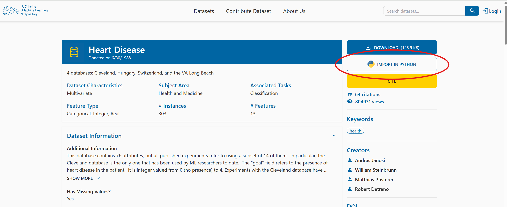
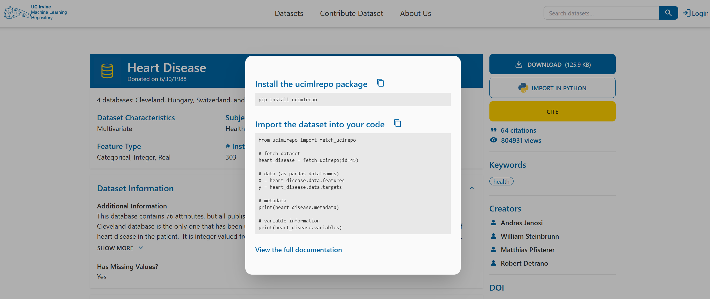

M8: Final Practice on a Heart Disease Dataset#
Congratulations, you have made it to the last module! Throughout the course, you have covered the fundamental knowledge and packages needed to apply Python in bioinformatics.
The aim of this module is to help you consolidate what you have learned. We will introduce a new dataset for you to analyse and explore. You’ll be given a series of exercises designed for you to complete independently, with minimal external assistance.
If you find yourself stuck, make sure to give it a proper attempt on your own first. If that doesn’t resolve the issue, revisit earlier modules to refresh your memory. And if you’re still unsure, feel free to use Google. Indeed, knowing how to use Google to look up code/ functions to accomplish a task is an important skill on its own. As a last resort you can use the solution sheet.
Loading the Dataset#
The dataset that we will be using is the Heart Disease Dataset from UC Irvine Machine Learning Repository: https://archive.ics.uci.edu/dataset/45/heart+disease
This dataset is intended for a machine learning task: given a set of patient features, the goal is to predict whether the patient has been diagnosed with a heart disease (the target variable). While building such a model is beyond the scope of this course, you will conduct some initial exploratory analyses to become familiar with the dataset and its contents.
These exploratory analyses are often an essential first step, regardless of whether your aim to develop a machine learning model or to pursue other kinds of investigation.
Exercise 1: Understanding the Dataset#
Take a few minutes to read through the dataset description on the website to familiarise yourself with its structure and the variables it contains.
Great! Now that you’ve had a look at the dataset description, let’s dive into the data itself.
Don’t worry if you didn’t understand everything — things should become clearer as you familiarise yourself with the dataset through practice.
At the top right-hand side of the datasets’s website, you’ll find a button labelled IMPORT IN PYTHON. Clicking on it will show you which package to install and how to load the dataset.


Tip
For the first part of the exercises, you mainly just need to follow this example code from the website.
Take your time going through the initial code, it will help you begin exploring the dataset and understanding what is being provided and how to work with it.
Exercise 2: Import the Dataset Using the UCI Package#
Install the required package (using any of the methods you’ve learned) and import the package into your code.
# Write your code here.
Exercise 3: Explore the Structure of the Dataset Object#
Create a Heart Disease dataset object by using
fetch_ucirepo(id=45).Check the type of the dataset object you’ve created.
Use
dir()on the object to list its attributes.Try accessing
.metadata,.variables, and.data. What kind of information do they contain? What type are they?
This will help you understand how the dataset is structured and how to navigate it.
# Write your code here.
Exercise 4: Summarise the Metadata#
Print the metadata information about the dataset. Try to answer the following questions based on what you find:
How many data points (patients) and how many features are there?
What are the names of the demographic features?
What is the name of the target variable?
Are there any missing values in the dataset? How can you identify them?
# Write your code here.
Exercise 5: Inspect Variable Details and Metadata#
Print the variable information for the dataset.
Which variables have missing values?
What is the unit of resting blood pressure?
How many categorical variables are there?
# Write your code here.
Exercise 6: Convert Data to DataFrame Format for Exploration#
Extract the feature values and the target values into two separate variables. Print each of them.
Do the number of rows and columns make sense?
Are you able to understand what information they contain based on the metadata exploration? If not, revisit the website, metadata, and variable information to clarify.
Import the
pandaslibrary.Combine the feature and target values into a single pandas DataFrame, where each row represents a patient and each column represents a feature, with the final column being the target variable.
Display the first five rows of the resulting DataFrame.
Tip
If you’re unsure how best to combine the features and target, start by checking their types. You’ll see that they are already both in the pandas framework, so you’ll need to use a pandas command to combine the two into the required layout — this should only require one line of code.
Whenever you’re unsure how to manipulate the data, the first step should always be to check its type. This will help you better understand what operations are available.
# Write your code here.
Data Cleaning#
Now that we have everything in a single, tidy DataFrame, we need to make sure the data is properly cleaned before we begin analysing it.
Let’s start with missing values. From the metadata, we already know that the features ca and thal contain missing values.
Exercise 7: Investigating Missing Values in the Dataset#
To decide how to handle these missing values, we first need a more detailed understanding. For both ca and thal, print the following information:
The full column of values.
How many times each contains a
NaNvalue.The number of unique values in the column, and what those values are.
The type of each feature (use the variable information DataFrame to check this).
Based on these results, think about what the best way to handle the missing data is.
# Write your code here.
You should notice that ca contains integer values, while thal is categorical, with each having four or three unique values respectively (excluding NaN). For this reason, it wouldn’t make sense to replace the missing values with the mean. We could replace it with the mode (the category / integer that is most common for that feature). However, since only a maximum of six patients out of the 303 have missing values (four for ca and two for thal) we can instead also just remove patients (rows) with any missing (NaN) values without loosing to much data.
Exercise 8: Removing Rows with Missing Values#
Remove all rows (patients) that contain any
NaNvalues.Print the number of NaN values in each column to ensure that none remain.
Print the shape of the DataFrame and check whether the number of rows makes sense.
Reset the row index after dropping the rows with missing data.
# Write your code here.
Great, now you should have no missing values in your dataset. A different problem that sometimes occurs is that the data is entered wrongly, leading to duplicate patients or features (i.e. they have the exact same values). We need to make sure that we do not have this problem here.
Exercise 9: Checking for Duplicate Rows and Columns#
Check that none of the columns or rows are duplicates of one another.
# Write your code here.
As a final step, we want to ensure that the target variable (num) is in the correct format.
According to the website, it should take five possible values: 0, 1, 2, 3, and 4.
A value of 0 indicates no heart disease, while values 1–4 represent different categories of heart disease.
For your analyses you might only be interested in whether the patient has the disease or not but not what type. For instance, for binary classification tasks or to simplify analysis. So the target values need to be converted into binary:
0 → no heart disease (False / 0)
1–4 → heart disease present (True / 1)
Exercise 10: Create a Binary Target Variable#
Check the type of
numand its unique values, as you did in earlier exercises, to confirm that the data matches the description.Create a new column at the end of the DataFrame called
heart_disease_binary. This column should contain 0 ifnumis 0, and 1 otherwise. Use a lambda function to achieve this transformation.Print the final DataFrame to verify the result.
# Write your code here.
Exploratory Data Analysis (EDA)#
Now that the dataset is clean, we can begin exploring the different features.
Visualisation is a key part of exploratory data analysis (EDA): it helps us detect patterns, identify outliers, and better understand the structure of our data — all of which can inform future modelling decisions. We’ll start by plotting the individual features to understand their distribution.
Depending on the type of the feature different plots and analysis methods need to be used. There are two main types:
Numerical (quantities and measurements)
Categorical (groups, types, labels)
(Note that this type might not perfectly align with the type python asigns to a value. We will refer to whether the feature is numerical or categorical as feature type and the type you get from Python when using type() as Python type.)
Numerical Features
These represent measurable quantities, and they can be either:
Type |
Description |
Example from Dataset |
Visualisation |
|---|---|---|---|
Continuous |
Can take any value within a range |
|
Histogram |
Discrete |
Countable whole numbers |
|
Histogram or bar plot |
Even though both types are numeric, you might treat them differently in analysis. For example, log transformations or standardisation usually make sense for continuous variables but not for small-range discrete variables like ca or slope.
Continuous vs Discrete – Real vs Representation
Some variables, like age, may appear as discrete in a dataset (e.g. whole years),
but they are inherently continuous — people can be 18.5 or 73.2 years old.
Because it spans a wide range and behaves like a measurement, age is typically analysed as continuous.
In contrast, features like number of vessels (ca) are truly discrete:
you can’t have 2.5 vessels — it’s either 2 or 3. These are counts and must be treated accordingly.
Discrete features with many unique values (like age) are often analysed as continuous.
Truly discrete, count-based features are handled differently — especially in statistical models.
Categorical Features
These represent groups or labels. They can be:
Type |
Description |
Example from Dataset |
Visualisation |
|---|---|---|---|
Nominal |
No natural order |
sex, thal, chest pain type |
Bar plot |
Ordinal |
Ordered categories |
slope (up, flat, down) |
Bar plot |
Just because a feature is stored as an integer doesn’t mean it’s numerical. Many categorical variables are encoded as integers (e.g., sex, cp, slope),
but these values represent categories, not measurements. Always check the metadata or variable descriptions to know whether a variable is truly categorical.
Identifiers
Some biomedical datasets include IDs (e.g., patient ID or record number). These are usually:
Unique per row
Not useful for prediction
Should not be plotted or included in modelling
Identifying the feature type
Try the following steps to classify your features:
Use the
variablestable: It often indicates if a variable is “Categorical” or “Integer”.Check
.dtypes:
float64 → likely continuous
int64 → might be either discrete or categorical
Use
.nunique():
Few unique values (e.g. 2–4) → probably categorical
Many unique values (30+) → likely continuous
Use the variable descriptions:
Do they describe a measurement (e.g. blood pressure)? → Numerical
Do they describe a group or type (e.g. chest pain type)? → Categorical
If you are not sure you can always just try plotting both histograms and bar plots and see what fits your data better. Histograms reveal shape and spread of numerical data while bar plots show category frequencies clearly.
Exercise 11: Classify Each Variable by Type#
Before plotting or analysing features, it’s important to understand what kind of variable each column represents. Your task is to identify the type of each feature. This will guide you in which visualisation, transformation, or statistical method to apply later. Consider the following variable types:
Continuous numerical – real-valued measurements with many unique values
Discrete numerical – count-based integers
Nominal categorical – unordered categories
Binary – a special case with exactly two values
Ordinal categorical – ordered categories
Identifier / metadata – e.g., patient IDs (not used in modelling)
(Not all types may be present in this dataset)
Tip - Tools / Methods to Help Identification
.dtypesto check each column’s data type.nunique()to see how many distinct values each feature hasvariables[['name', 'type', 'description']]to understand what each column represents
# Write your code here.
Now that you know the type of feature we can start treating and plotting them correctly. Lets start with categorial variables. Plotting the distributions can help you:
Understand class balance (e.g., male vs female)
Identify rare or dominant categories
Spot issues like unbalanced variables, which can affect modelling
Exercise 12: Explore Categorical Variable Distributions#
Your goal is to explore how categorical variables are distributed across the dataset.:
Import the visualisation library
Use a loop to create bar plots for each categorical feature.
Use
.value_counts()to get category counts.Use
plot(kind='bar')to create the bar plot.
Try displaying all the plots in a grid of subplots for clarity.
# Write your code here.
Let’s do the same for the continuous numerical features you identified earlier. We will use histograms for them since they are ideal for
Understanding the shape of the distribution (e.g. symmetric, skewed, bimodal)
Identifying outliers or unusual values
Comparing ranges and spread between features
Exercise 13: Visualising Continuous Features with Histograms#
Task:
Create a list of continuous features from your earlier classification.
Plot a histogram for each of them.
Optionally, group them in subplots for clarity.
Tip
Use
bins=20andedgecolor='black'for clean visualsSet
figsize=(15, 10)for a good layout
# Write your code here.
Now that you have plotted each of the features on their own, we can also combine them in different ways to plot distributions of subgroups to see how they compare / relate to each other. For instance, there tend to be differences between the sexes. Lets investigate whether any of the features value distribution differ between male and female patients. This can help identify biological or physiological differences, features that may require sex-specific modelling, and whether standardisation should be stratified.
Unequal group sizes can affect your interpretations
In our dataset, around 68% of the patients are male, and only 32% are female.
This imbalance can impact how we interpret feature distributions.
For example, if a certain chest pain type appears more often in males, it may simply reflect the larger number of male patients — not a true difference in risk or symptoms.
To make more meaningful comparisons, we’ll now stratify our plots by sex and compare distributions within each group.
Exercise 14: Compare Categorical Distributions by Sex#
Task:
Use your list of categorical features.
Count the number of entries for each category for each feature for each sex
Create bar plots for each feature, stratified by sex:
One bar for each category within each sex group.
use
kind='bar'orkind='barh'with legends and labels.Add titles, axis labels, and a legend
Tip
Use
pd.crosstab()or `df.groupby(‘sex’)[feature].value_counts() to create the subgroups value counts for plotting.
# Write your code here.
Exercise 15: Compare Continuous Features by Sex#
Task:
Use the list of continuous features
For each feature, plot overlaid histograms for male and female patients
Use
alpha=0.5and different colours to distinguish the groupsAdd titles, axis labels, and a legend
# Write your code here.
What to do with skewed distributions?
Skewed variables can sometimes distort correlations or model predictions.
A common fix is to apply a log transformation to make the data more normal.
This is especially helpful for positively skewed data like oldpeak or chol.
import numpy as np
df['log_oldpeak'] = np.log1p(df['oldpeak']) # log1p handles 0s safely
Exercise 16: Boxplots of Continuous Features by Sex#
In the previous exercise, you used stratified histograms to see how the distribution shape of each continuous variable differs between males and females.
Now, you’ll use boxplots to visualise:
Summary statistics (median, quartiles)
Spread and skewness
Outliers more clearly
While histograms are better for understanding the full shape of a distribution (e.g., unimodal, skewed, bimodal), boxplots give a cleaner summary of central tendency and variability, especially for comparisons across groups.
Using both gives a more complete picture and helps confirm or refine your interpretations.
Task:
Import seaborn if you haven’t yet
For each continuos feature, create a boxplot comparing the distribution for males and females
# Write your code here.
Now that we have looked at the distributions of the features for whole database or subgroups we can now start exploring the relationship between two features. A correlation matrix is a powerful way to do this since it can be used to:
Identify linear relationships (positive or negative)
Detect redundant features (high correlation means similar information)
Understand which variables may interact in modelling
Exercise 17: Exploring Relationships Between Continuous Features#
Task:
Create a new dataframe with only the continuous features
Use
.corr()to compute the Pearson correlation matrixPlot the matrix using
seaborn.heatmap()Set
annot=Trueto show correlation valuesSet
cmap='coolwarm'for intuitive colouring
Interpret the heatmap:
Which features are positively or negatively correlated?
Are any relationships strong (above \(\pm0.6\))?
Do any pairs look redundant or surprisingly independent?
# Write your code here.
We can’t always trust the results from the pearson correlation. Some of our continuous features are right-skewed or contain outliers. This violates Pearson correlation assumption of normality and linearity, which may lead to underestimation of non-linear relationship or high sensitivity to outliers.
Instead you can compute Spearman correlation, which is:
Based on ranks, not raw values
More robust to outliers and skew
Better at detecting monotonic (non-linear) trends
Exercise 18: Spearman Correlation#
Use
.corr(method='spearman')to compute the Spearman correlation matrix.Plot it as a heatmap (just like before).
Compare it to your Pearson matrix:
Which pairs change the most?
Are there any new strong relationships?
Do any associations disappear?
Seeing how these two methods differ gives you a deeper view of your data and helps decide whether some features need transformation or nonlinear methods downstream.
# Write your code here.
You’ve explored relationships between features. Now it’s time to ask which features differ most between patients with and without heart disease. This is a crucial part of exploratory analysis and feature selection. You’ll stratify patients based on the binary outcome: heart_disease_binary (0 = no disease, 1 = disease).
Not only are we interested in visualising how the distribution differ depending on whether a patient has heart disease but also if these differences are significant using statistical tests. Statistical tests return p-values. A low p-value (e.g., < 0.05) means the feature is significantly associated with heart disease. If the result is not significant, it may not be useful on its own — or it might require interaction with other features.
Exercise 19: Explore Feature Relationships with the Target Variable#
Pick your continuous features
For each one:
Create a boxplot grouped by
heart_disease_binaryOptionally: also create stratified histograms or violin plots
Observe:
Which variables show clear separation between the two classes?
Are there noticeable shifts in distribution or outliers?
Which features might be informative for classification?
This step helps identify potential predictors of heart disease, builds intuition about what differences exist between groups, and sets the stage for later statistical testing or modelling.
# Write your code here.
Exercise 20: Statistical Testing — Heart Disease vs Continuous Features#
If needed, install SciPy first. Then import
ttest_indandmannwhitneyufromscipy.stats.Run both tests for each continuous feature:
T-test: checks if means are significantly different
Mann–Whitney U: non-parametric alternative for non-normal distributions
Print and interpret the p-values:
Which features show statistically significant differences?
Do results change between t-test and Mann–Whitney?
Reminder: Check distribution shape
When results disagree, it often reflects a violation of assumptions — such as skewness or outliers — which makes the non-parametric test more trustworthy. Use your histograms and boxplots from earlier to decide which test is appropriate.
If a feature is skewed or has many outliers, the Mann–Whitney U test is more reliable.
If a feature is symmetric and looks normally distributed, the t-test is usually appropriate.
This helps ensure you’re using valid statistical assumptions, and makes your results more trustworthy. You can also use both tests for robustness, especially with non-normal data.
# Write your code here.
Exercise 21: Exploring Categorical Features vs Heart Disease#
You’ve explored continuous variables in detail — now it’s time to analyse how categorical features relate to heart disease.
For each categorical feature:
Create a grouped bar chart showing the count of heart disease (0 vs 1) per category.
Run a chi-squared test of independence for each categorical feature vs. heart disease.
# Write your code here.
# Write your code here.
(Optional) Exercise 22: K-Means Clustering — Grouping Patients#
So far, you’ve explored individual features and compared them to heart disease status. Now let’s see if we can automatically group patients based on patterns in their data — without using the diagnosis label.
This is known as unsupervised learning, and one of the most widely used methods is K-Means Clustering.
In this exercise, you’ll:
Select features that appear statistically informative
Standardise them so they’re on the same scale
Use K-Means to form two clusters (\(K = 2\))
Check how well the clusters align with actual heart disease labels
Task
Select features: Use a mix of continuous and categorical features that showed strong group differences earlier.
For example:
Continuous:
age,thalach,oldpeak,trestbpsCategorical:
cp,thal,slope,sex
One-hot encode the categorical variables using
pd.get_dummies()
What is One-Hot Encoding
Most machine learning algorithms, including K-Means, can’t handle categorical variables directly.
One-hot encoding turns each category into its own binary (0 or 1) column.
Example:
If the cp (chest pain type) variable has 4 categories (0, 1, 2, 3), it will become 3 new columns: cp_1, cp_2, cp_3 (we drop one to avoid redundancy).
This lets the model use each category as a separate feature.
Standardise the continuous features using
StandardScalerCombine the encoded categorical and scaled continuous features into one single dataset
Fit KMeans with
n_clusters=2and assign cluster labels
How to run K-Means in Python
from sklearn.cluster import KMeans
# Create a KMeans object
kmeans = KMeans(n_clusters=2, random_state=0)
# Fit it to the data and assign cluster labels to each patient
df['cluster'] = kmeans.fit_predict(X_cluster)
Compare the resulting clusters to actual
heart_disease_binaryvalues using:A confusion matrix (
pd.crosstab())An optional heatmap for visualisation
What is a Confusion Matrix?
A confusion matrix is a table used to compare the model’s predictions with the actual values.
It shows how many patients were correctly or incorrectly assigned to each group.
For example, in our case:
Rows = the cluster labels assigned by K-Means (cluster 0 or 1)
Columns = the true diagnosis (
heart_disease_binary= 0 or 1)
This helps you assess how well the clusters match real diagnoses.
To create it in pandas:
pd.crosstab(df['cluster_kmeans'], df['heart_disease_binary'],
rownames=['Cluster'], colnames=['Heart Disease'])
# Write your code here.